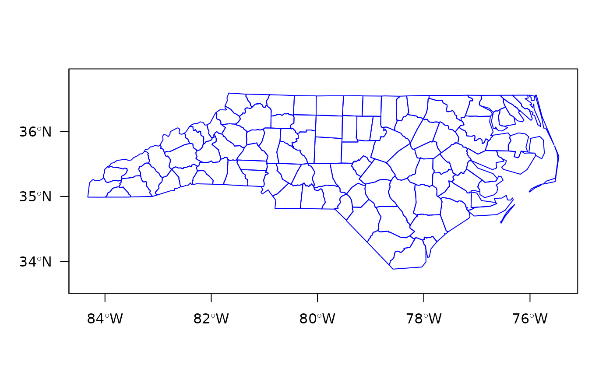

sp2WB.RdThe function exports an sp SpatialPolygons object into a S-Plus map format to be import by WinBUGS.
sp2WB(map, filename, Xscale = 1, Yscale = Xscale, plotorder = FALSE)
| map | a SpatialPolygons object |
|---|---|
| filename | file where output is written |
| Xscale, Yscale | scales to be written in the output file |
| plotorder | default=FALSE, if TRUE, export polygons in plotting order |
http://www.mrc-bsu.cam.ac.uk/wp-content/uploads/geobugs12manual.pdf
xx <- readShapePoly(system.file("shapes/sids.shp", package="maptools")[1], IDvar="FIPSNO", proj4string=CRS("+proj=longlat +ellps=clrk66"))#> Warning: readShapePoly is deprecated; use rgdal::readOGR or sf::st_readtf <- tempfile() sp2WB(as(xx, "SpatialPolygons"), filename=tf) xxx <- readSplus(tf, proj4string=CRS("+proj=longlat +ellps=clrk66")) all.equal(xxx, as(xx, "SpatialPolygons"), tolerance=.Machine$double.eps^(1/4), check.attributes=FALSE)#> [1] "Names: 100 string mismatches"# NOT RUN { x <- readAsciiGrid(system.file("grids/test.ag", package="maptools")[1]) xp <- as(x, "SpatialPixelsDataFrame") pp <- as(xp, "SpatialPolygons") td <- tempdir() sp2WB(pp, filename=file.path(td, "test.map")) # }